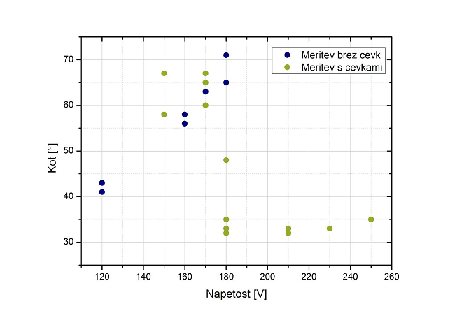
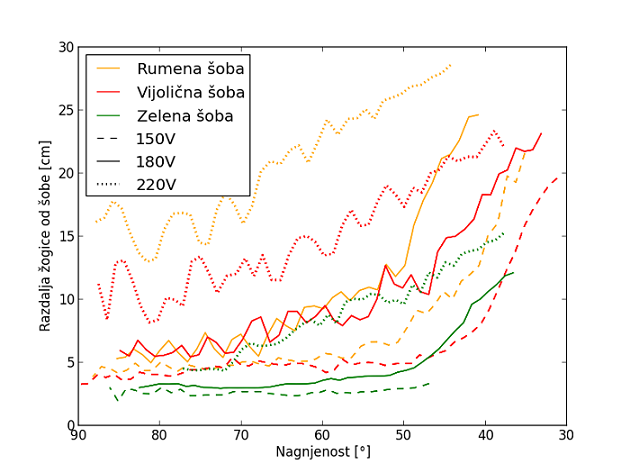
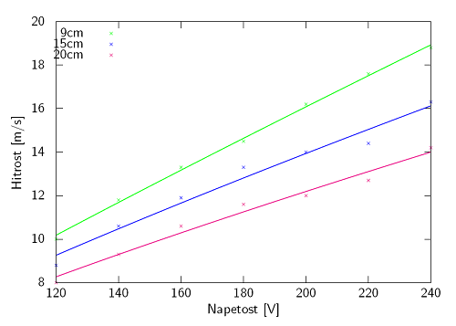
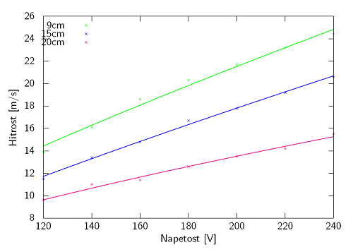
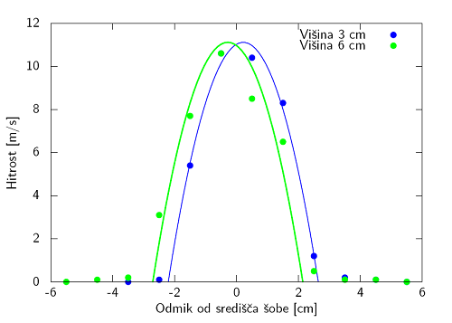
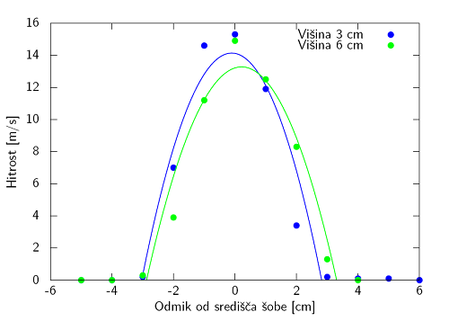
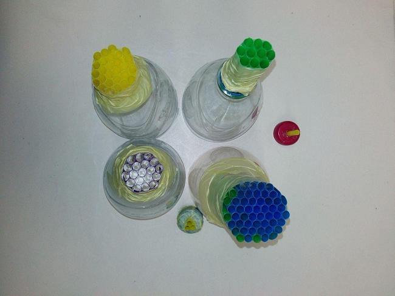
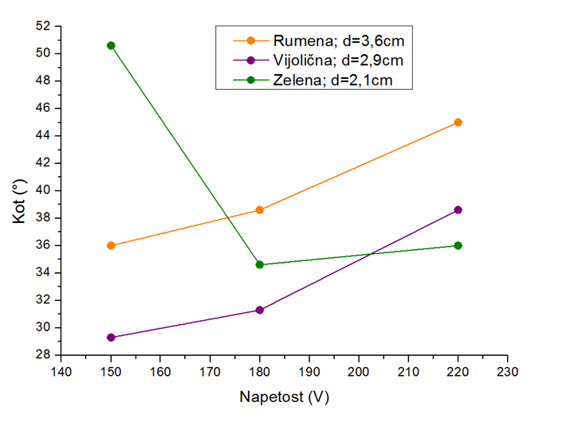
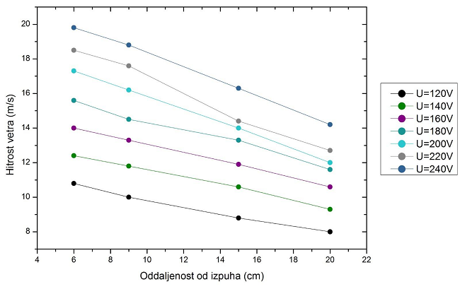

Delo in meritve
Za preverjanje našega teoretičga modela smo morali med praktičm delom preveriti naslednje parametre:
- Kaj je najbolj optimalna oblika šobe za čim bolj laminaren tok
- Kako se spreminja hitrost vetra v odvisnosti od napetosti na fenu, oddaljenosti od izpuha, z radijem od sredine izpuha, oblike šobe ter kako se spreminja okoli žogice
- Kako hitrost vetra vpliva na največji možni odklon
- Kako se spreminja največji možni odklon v odvisnosti od premera izpuha
- Pri kakšni hitrosti vetra žogica pade
V prvem terminu praktičnega dela smo se najprej seznanili z opremo. Na voljo smo imeli tri izvire zračnega toka, navaden sušilnik za lase in pa še dva večja fena. Kratko uvodno poizkušanje je nakazalo, da bomo meritve nadaljevali z enim od večjih dveh fenov, kjer smo lahko lažje regulirali obliko izpuha in pretok zraka.
Ker smo od ene prejšnjih skupin dobili namig da bomo najbolj laminaren tok dosegli, če bo šel ta skozi skupek cevk, smo se odločili, da bomo najprej preverili ta namig. Iz gumijastih cevi smo zlepili izpuh in se lotili meritev. Dogajanje smo snemali s kamero in kote določevali pozneje z računalniško obdelavo.
Osnovni izpuh je bil premera 3,8 cm, nato pa smo ga napolnili z gumijastimi cevkami premera 1 cm in notranjega premera 0,6 cm.
Hkrati kot smo preverjali razliko med izpuhom s in brez cevk, smo preverjali še odvisnost od napetosti na fenu, oz. od tega kako močno piha. Meritve so pokazale, da se princip s cevkami bolje izkaže kakor samo izpuh brez cevk, saj smo s cevkami dosegali manjše kote od vodoravnice kot brez.

Večja napetost in hitrost je v primeru, ko smo kot izpuh uporabili tistega iz gumijastih cevk, pomenila manjši kot, vendar se pri velikih napetostih (od 180V dalje) kot ni več bistveno zmanjševal. Pri meritvi brez cevk pa se je kot, pri katerem žogica pade, z večjo napetostjo povečeval.
Iz posnetkov smo lahko določili tudi kako se spreminja oddaljenost žogice z nagnjenostjo fena. Naslednji graf prikazuje oddaljenost žogice od šobe v odvistnosti od nagiba za tri šobe pri treh napetostih.

Vidno je da se žogica s tem ko se s fenom približujemo vodoravnici, čedalje bolj oddaljuje od izvora zračnega curka do točke kjer pade.
V drugem terminu smo se lotili raziskovanja profilov hitrosti vetra pri različnih višinah in napetostih. Meritve smo opravili z anemometrom, merilcem hitrosti vetra.
Naslednja dva grafa prikazujeta hitrost zračnega toka v odvisnosti od napetosti pri različnih višinah, prvi za šobo s cevkami in drugi za brez cevk.
Za regresijo smo uporabili funkcijo oblike v(U)=(a \cdot U)^x. Za podroben ogled funkcij in razloga za izbiro take oblike klikni spodaj.
Pokaži/skrij
 
Očitno je, da smo pri šobi brez cevk dosegli večje hitrosti, vendar je takrat tok bolj turbulenten in zato žogica ne stoji v curku. Pri šobi s cevkami pa so hitrosti manjše, tok je bolj laminaren, in žogica je stabilnejša. Opazno je tudi to, da ko povečamo napetost in s tem pretok in hitrost curka, hitrost blizu šobe narašča hitreje kakor daleč od šobe.
Preverili smo tudi kako zgleda profil hitrosti za šobo s cevkami s premerom 3,8 cm pri dveh različnih napetostih, kar prikazujeta naslednja dva primera, prvi za napetost 150V in drugi za 220V. V teoretičnem delu smo napisali, da pričakujemo paraboličen profil hitrosti, a smo že med izvajanjem meritev opazili, da to velja le za točke blizu sredine izpuha, za tiste, ki so na robu pa lahko rečemo, da je hitrost enaka 0 m/s. Ocenjujemo, da nam parabola še vedno dovolj dobro opiše profil hitrosti.
Regresija s parabolično funkcijo pri napetostih 150V in 220V  
V tretjem terminu pa smo se posvetili predvsem temu, kako premer izpuha vpliva na maksimalni odklon. Izdelali smo več izpuhov z različnimi premeri iz plastičnih slamic, ki smo jih po potrebi menjali. Ena slamica je imela premer 0,6 cm.
Ti so bili:
Modri: premer 4,7 cm,
Vijolični: premer 2,9 cm,
Rumeni premer 3,6 cm,
Zeleni: premer 2,1 cm,
ter še dva manjša, eden sestavljen iz treh slamic, ter drugi, ki je bil samo ena slamica.
Po začetnem preizkušanju smo izločili najširši izpuh in pa dva najmanjša, saj žogica v zračnih tokovih teh treh izpuhov ni bila stabilna, kar je privedlo do padca že pri manjših odmikih. Tako smo meritve nadaljevali s preostalimi tremi.

Izpuhi, narejeni iz slamic
Naslednji graf prikazuje povprečne kote, ki smo jih s posameznimi izpuhi pri različni napetostih.

Najmanjše kote smo dosegli z vijoličnim izpuhom (premer je 2,9 cm). Iz grafa je še razvidno, da če premer povečamo, žogica pade že pri večjih kotih, tak je rumeni izpuh s premerom 3,6 cm. Ti dve meritvi sta v kontradikciji z meritvijo z gumijastimi cevkami, ki smo jo naredili na začetku. Ta meritev je pokazala, da če močno povečamo napetost, dosežemo manjši kot, medtem ko za vijolični in rumeni izpuh pri tej meritvi očitno, da je najmanjše kote dosežemo pri nizkih napetostih. Takrat fen ne piha močno in je žogica nizko nad izpuhom. Enako smo opazili pri meritvi brez izpuhov iz cevk in slamic. Nižje od 150 voltov napetosti nismo mogli meriti, saj žogica v zračnem curku pri teh napetostih ne lebdi več, tako da opazovanega pojava nismo mogli preučiti.. Posebna je meritev z zelenim izpuhom, najožjim od treh preizkušancev, kjer pa je odvisnost od napetosti ponovno drugačna, podobna tisti iz začetka z gumijastimi cevkami.
Naredili smo še meritev hitrosti vetra v odvisnosti od razdalje od izpuha pri različnih napetostih za zeleni izpuh.
